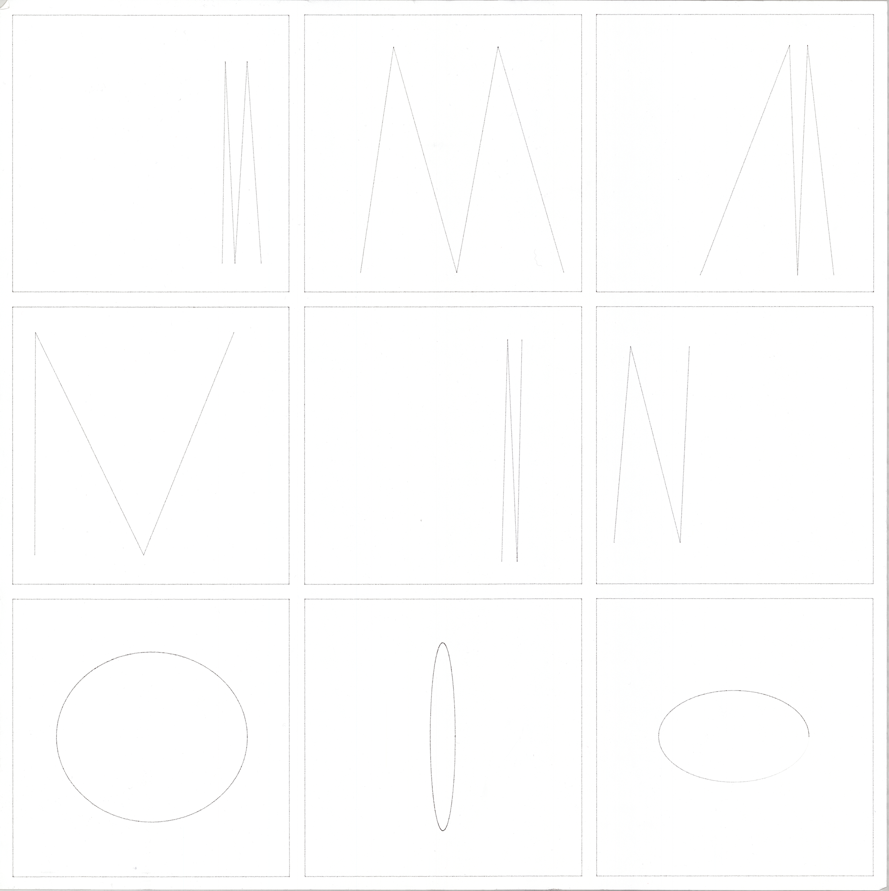
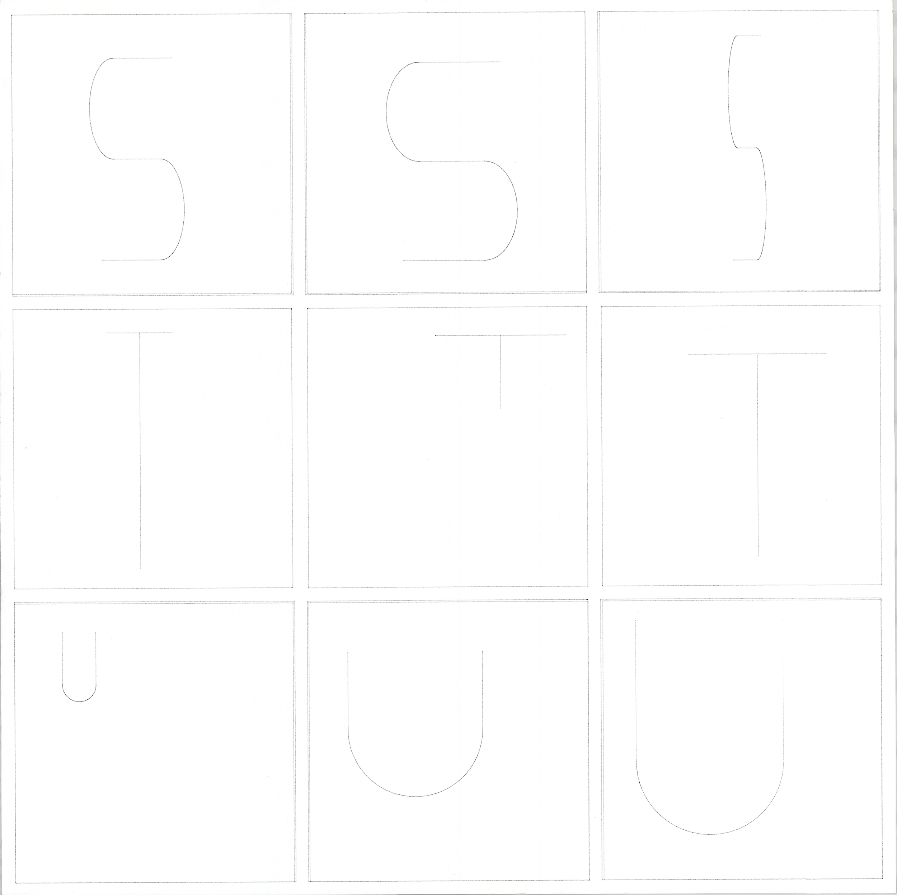
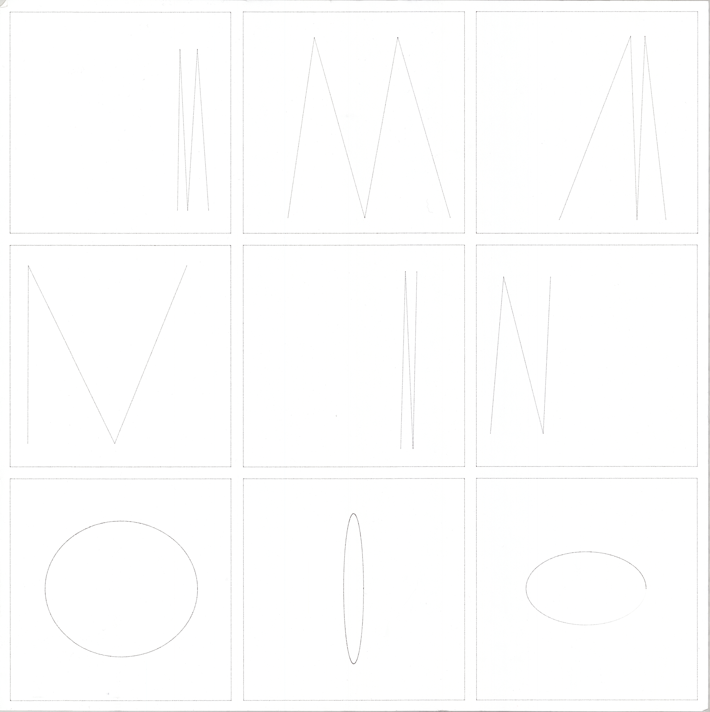
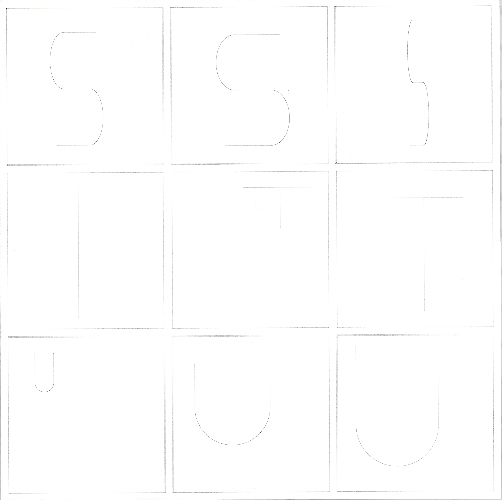

Thesis Project 1, Fall 2017


 




Input Output explores the possibilities of instruction-based methods in both image-making and typography. By extending the idea of rule-based art to the program, Input Output questions whether a set of instructions executed in code can produce unexpected and poetic results.
The initial investigation took the form of ten Twitter bots. The bots both create and post images that respond to a specific set of instructions. These instructions define a range of compositions consisting solely of circles on a white square canvas. Posting every forty seconds, the bots are intended to be exhaustive. The twitter outputs are then taken from their original context and systematically placed into a 3 x 3 grid to be drawn with a pen plotter at large-scale.
The second project deals with rules and constraints in typography. For this, I created a typeface comprised of programmatically generated letterforms. While my previous project involves a high level of control over its outputs, the second project is nearly completely random. The typeface is exhibited in three browser-based animations where each letterform updates every half-second. Each animation builds off of the previous one by adding more randomized elements as one progresses through them.